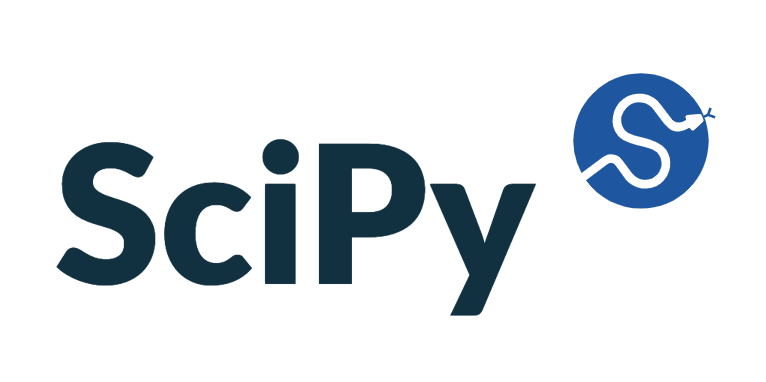
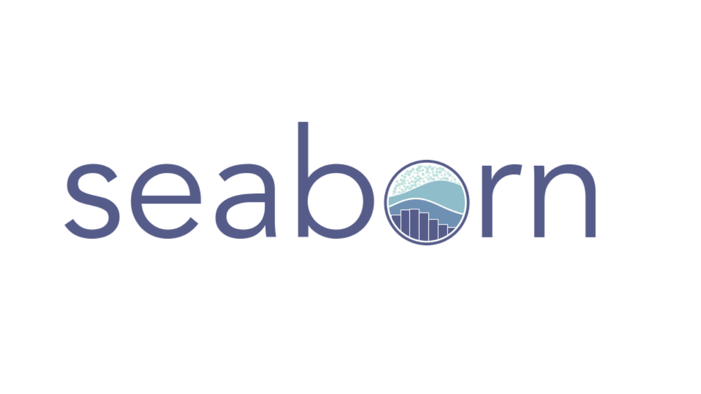
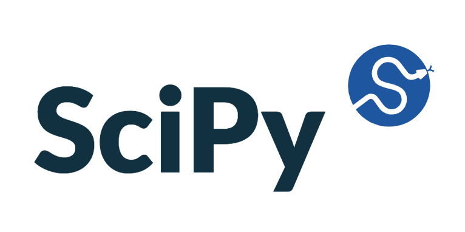
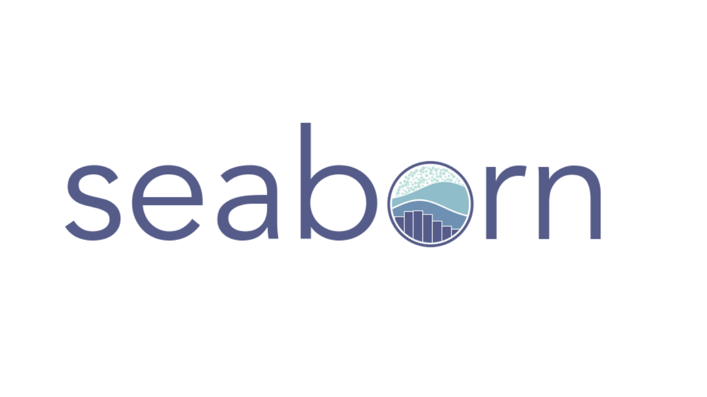

Data-Driven Insights to Maximize Revenue for Megaline Telecom
In this project, I analyzed customer behavior and revenue patterns for Megaline, a telecom company offering two prepaid plans: Surf and Ultimate. Using real customer data, I applied advanced data cleaning, feature engineering, and hypothesis testing techniques to uncover which plan drives higher profitability. The project combined business acumen with statistical rigor to guide data-backed marketing decisions.

 





Conclusion
The results revealed that the Ultimate plan consistently outperforms Surf in revenue generation, mainly due to higher usage of data and call services. No significant regional differences were found, suggesting that customer behavior patterns are consistent across markets. These insights empowered Megaline to optimize its advertising strategy, focus on high-value customers, and make evidence-based decisions to boost growth.